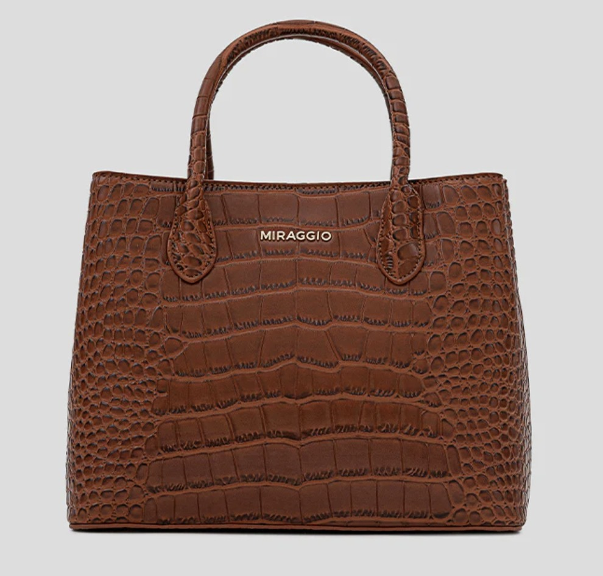

CONGRATULATIONS! YOU SAVED A CROCODILE

₹3,249
Victoria Satchel Handbag
Classics never go out of style. An elegant handbag that goes in the mode for both day and night. With several compartments to store your needs, a detachable shoulder strap, this faux leather bag is all about the minimalist appeal.
Specifications:
Faux Leather
Inner flap snap closing
Top Handle with a detachable shoulder strap
2 compartments & 1 zipper compartment
1 zipper pocket, 1 mobile/ card pocket
Lining: Polydrill
Closure: Zip
Size H x W x D (cm): 15 x 22 x 88
Depth: 15cm
Height: 22.8cm
Length: 29cm